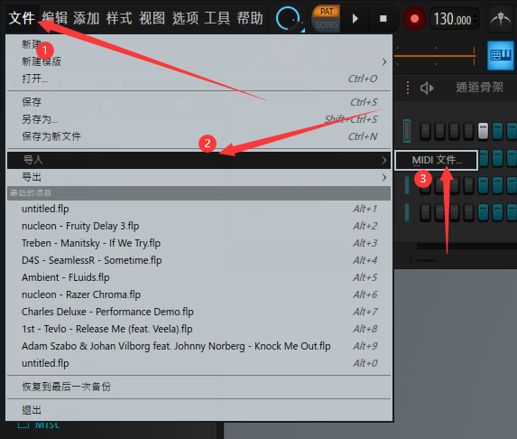
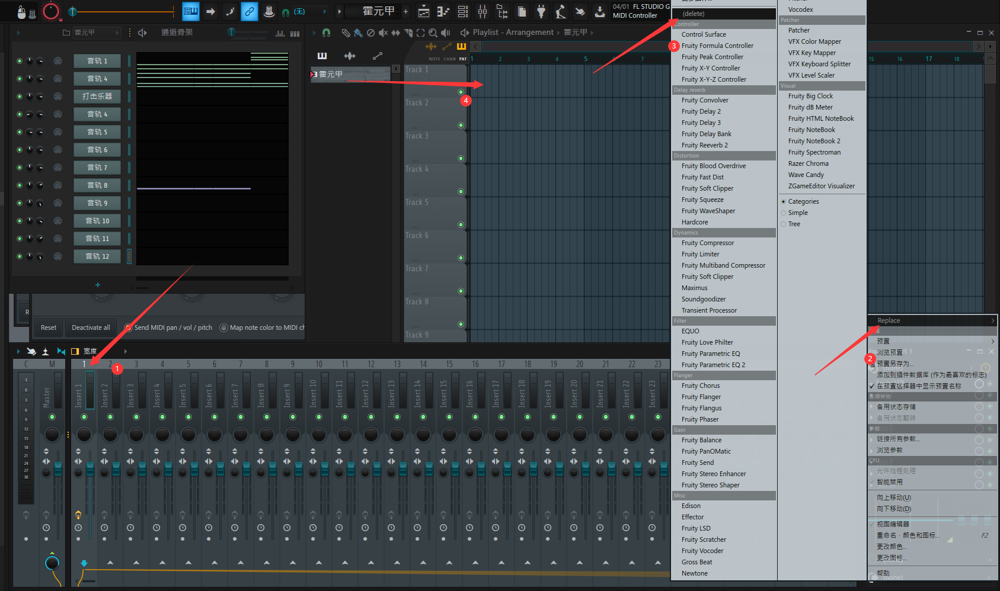
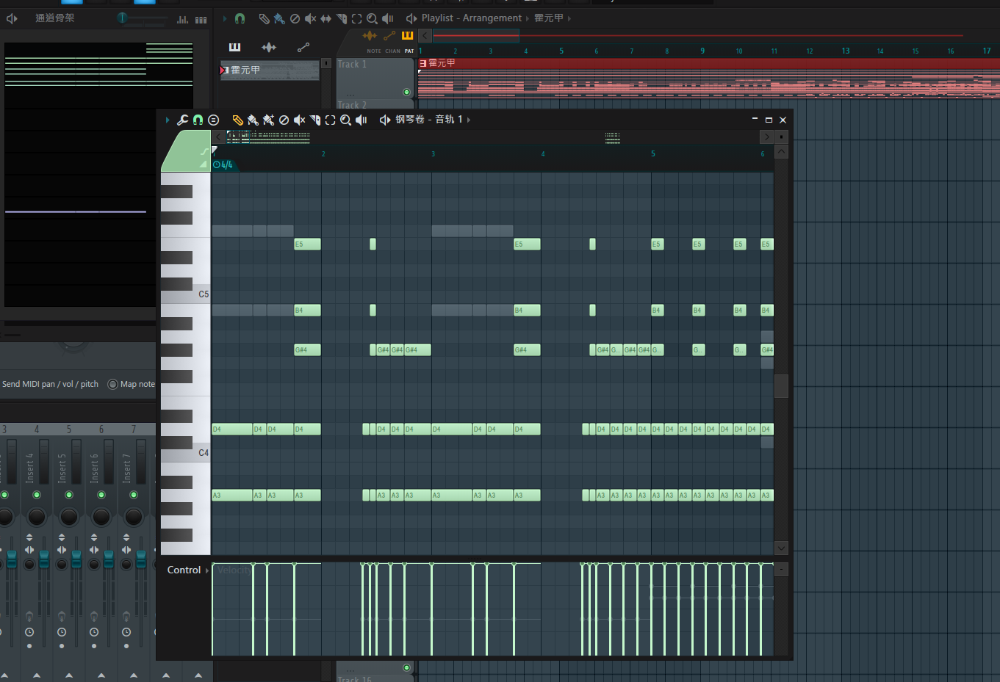

如何制作人力Vocaloid鬼畜视频
第一步 准备工作
本篇文章主要讲解基于UTAU的vocalold鬼畜。请自行准备以下软件和素材：
UTAU 链接：http://utau2008.xrea.jp/ 下载完成后一定不要安装在带有中文的路径，否则软件会出现BUG。有汉化需求可以去网上找汉化包，解压后覆盖在源文件RES文件夹。
UTAU音源配布 可以去B站搜索音源配布，可以看到很多大佬制作的音源，下载后解压在voice文件夹中。使用请标明来源。
鬼畜素材，去b站下载。
mid文件 这是用来记录曲谱的文件，可以去midishow网站下载。
你要鬼畜的音乐原曲和伴奏，去百度搜。
Adobe Premiere 可以下载Vposy的破解软件，下载完成后点击set-up.exe安装。
Adobe Photoshop 可以下载Vposy的破解软件，下载完成后点击set-up.exe安装。
FL Studio 链接https://www.flstudiochina.com/xiazai.html 下载完成后请根据软件提示安装。
第二步 修改mid文件
注：这一步是针对下载的mid文件包含伴奏的，如果你下载的mid文件标明了只有人声，可以跳过这一步。
打开FL Studio，第一次打开的话，会出现一个示例工程，不用管他，在软件左上角按下图依次点击，如果你是英文的，请按顺序点。
导入你下载的mid文件，按下F9会出现一个窗口，找到上方标着数字1的一条点击，点最右边的Fruity LSD一栏左边的三角，点击Replace，再点击最上方的(delete)删除Fruity LSD,在主页面中间列表拖动mid文件到右边页面的第一行。双击刚才拖进来的东西，会弹出一个钢琴卷帘。
 接下来将你下载的原曲拖入刚才拖入mid文件的第二行，如下图：
接下来吧曲谱和原曲对齐，使它们播放时是同步的。接下来打开之前的钢琴卷帘，你会看到非常多的音符啊，不要怕qwq。先找到原曲人声开始的位置，再打开钢琴卷帘最上方的这一栏，找到一条轨道对应上人声，这些音符对应的就是人声的音高。记住这个音轨的名字就行了。
第三步 开始调教吧★
不要关闭FL Studio，接下来打开UTAU软件，点击主页面左上方第一个，点击下面从上往下第六个（中文是导出），什么？你问我为什么不截图，因为这个界面不能截上啊啊啊啊QAQ。然后选择你刚才记的名字，这时就将人声导入到UTAU里面了，但是UTAU有个BUG，在FL Studio编辑的mid文件导入到UTAU会识别不出曲速，(如果是正常的请自动跳过下一句话)这时需要手动设置曲速，回到FL studio，最上方的第一行红色圆圈后面的数字就是曲速，记住这个数字，回到UTAU，点击右上方的50000，把你刚才记的曲速写上去，这时新的曲速就被设置好了。
现在可以在UTAU里进行编辑了,在右上角设置为mode2，选中音符，在上方的第二行的一个长条里填入拼音，点击右边第一个按钮就可以将音源匹配到选中的音符。比如我想让一个音符发出wo的音，先选中这个音符，让后在上方的长条里输入wo，点击右面的第一个按钮，就可以让这个音符发出wo的音
接下来重复操作，使音符全部应用上拼音，这时可以长按鼠标左键，选中多个音符，点击空格播放这些音符检查是否有音符不发音。如果音符不能发声，先检查拼音是否无误，确定无误后，则音源里没有这个音的人声，你可以按下Ctrl+G组合键查看音源里的所有人声，找到一个近似的拼音，记住这个拼音的写法，关闭窗口，重新在不发音音符里写入刚才记的近似拼音。
重新播放一下，就可以听到效果了，如果你想让这些音符拥有转音、颤音的话，可以选中对应的音符按下Ctrl+T组合键设置转音或颤音，这里不做讲解，可以自己摸索每一个选项的效果，不懂可以去百度查，翻译图放在下面：
到现在为止，你已经做出了一个还算可以的效果了。这时按下组合键Ctrl+S保存工程文件，点击上方第五个选项中的第一个就可以导出了。至此，调音的工作已经大概结束了。如果你想要更好的效果，可以去b站找教程。
第四步 将调教完毕的人声和原曲混合
打开FL Studio，将在UTAU导出的音频文件拖入第四行，对齐人声和原曲，将伴奏拖入第五行，静音第一二三行，这时人声就可以和伴奏对上了。这时你可以给人声加特效，让人声听起来更和谐。在FL Studio中找到这一栏，将人声文件前面的空栏中拉到1（我的人声是一句一句做的）就可以给这些标上1的文件统一加特效（duang~）
按下F9调出混音栏，在窗口上方可以看到数字，你刚才设置的数字是什么，在这里对应的数字就可以加特效。我设置的是1，所以我要点击1下面对应的一条。这时就可以编辑效果了。点击最右边的三角，点击Select，可以看到非常多的效果，我在下面挑几个我经常用的效果进行讲解，你也可以去百度搜索其他效果如何使用
1.Fruity Limiter
这是一个限制器，可以防止音量过高导致的爆音。通过给一个允许的最大音量，超过这个值就会被限制。
选择Fruity Limiter。它的页面长这样
绿色旋钮代表允许的最大音量，紫色可以增大音量，可以自己体会。按下空格播放，可以在上方看到波形图。你可以自行调整这两个旋钮，达到自己想要的效果。你也可以试试音量拉满，加一个限制，听听效果。
2.Fruity parametric EQ2
这是一个滤波器，可以过滤特定的频率。选择Fruity parametric EQ2，它的页面长这样。
页面默认有7个控制点，通过拖动控制点实现滤波，位置高代表这个控制点所在频率的声音会被增大，位置低代表这个控制点所在频率的声音会被降低。可以点击右上角的Presets选择各种预设。
3.Fruity Reeverb2
这个可以加混响，模拟在大厅，小房间等各种地方的音效。点击右上方Presets选择预设就可以到达一个好的效果。
其他的效果可以自己摸索学习，我就不继续说了。这时可以按下空格播放，如果满意就可以导出了（注：没有购买的FL Studio无法保存工程文件，只能导出音频。我们只是处理音频，没有必要购买软件qwq。）按照下图导出
这时处理音频的工作就已经全部结束了，接下来开始剪辑视频。
第五步 剪辑视频
注：我的页面布局可能和各位的页面布局不一样，请注意识别每个窗口。
打开Adobe Premiere，进入软件后弹出一个窗口，选择新建项目，设置项目名称和保存地址，其他的默认。
按照下图新建一个序列，设置全部默认（如果你懂一些视频规格的话可以自行选择）。
拖入你的视频素材和在FL Studio导出的音频到项目栏。再从软件里项目栏拖入右边的窗口
在效果一栏中，有很多可以使用的效果，这些我是不能没个都说的，遇到问题一定要百度，一定要百度。如何使用一个效果？现在效果栏找到自己想要的效果，拖入下方视频剪辑栏对应的一条，在效果控件里可以看到具体设置。比如我的素材有黑边，我可以拖一个裁剪效果到下方视频剪辑栏的对应素材，在效果控件里编辑上、下、左、右各自裁剪的多少实现裁剪。再在上方默认的效果中找到缩放，给一个适当的大小，使素材填满屏幕。
1.如果你想让素材在时间轴中移动，选中素材长按鼠标左键就可以拖动。
2.如果你想复制一个素材，按住Alt键拖动素材，就可以分出一个新的素材。
3.如果你想分割一段素材，先使当前帧在你想要分割的位置（可以按下键盘上的←或→逐帧操作），选中你要分割的素材，按下K键就可以分割素材。
4.如果你想给多个素材加同一个效果，可以选中这些素材（一定要紧挨着）再右键，选择嵌套，可以合并这些素材，再添加新效果。如果你还想单独调整嵌套里的单个素材，可以双击嵌套，进入嵌套编辑。
5.如果你进行了错误的操作导致没有实现你想要的效果，可以按下Ctrl+Z组合键恢复下一步的操作，如果你恢复过头了，也可以按下Ctrl+Shift+z前进下一步。
6.如果你想要一个素材实现动画效果，请在效果控件里找到你想要变化的值，比如我想要一个素材移动，我可以找到位置，点击前面的小时钟，就可以开始记录。这时会在当前帧生成一个关键帧，这时将当前帧的位置移到你想要动画结束的位置，改变位置的值，这时会自动创建一个新的关键帧，软件会自动补出两个关键帧之间的动画，你可以在效果控件中时间轴里的小四边形移动关键帧位置。如果你想要更平滑一些的动画，可以选中两个关键帧，右键变蓝的地方，在临时插值中选择缓入或缓出，可以得到一个平滑的动画。
7.如果你想添加文字，可以在序列左边找到一个T的图标并点击，再点击视频预览中的一个地方自动创建一个文字图层，可以在效果控件里面编辑各种参数。
8.如果你想拉伸视频，使播放速度放缓或加快，可以点击R键（切换到英文输入法），拉动序列中素材的尾部，向外拉是减速，向里拉是加速。在减速后，视频可能会变得卡顿，这时可以右键素材，时间插值改成光流法，按下Enter键渲染，软件可以渲染出流畅的效果。
9.如果你想在两个素材之间添加一个转场，可以使用在效果一栏的视频过渡，拖到两个素材的交界处。如果觉得这些转场不够好，可以使用预设，在B站有很多，按照他们给的教程使用。
大概需要讲的我都说在上面了，不知道如何实现效果请一定要百度，B站很多UP主都有讲解Pr的视频。完成视频剪辑后，就可以导出你的视频了。
按下Ctrl+M组合键，弹出导出窗口，格式选择H.264，预设默认，点击蓝色的输出名称选择输出位置。剩下的全部默认。完成后点击导出等待导出完毕。这时，视频处理的工作已经全部结束了。
第六步 制作封面
打开Ps，弹出一个窗口，点击新建，B站对视频封面的要求是：视频封面(建议上传高清封面尺寸≥1146*717)。所以我们先把高度改成717像素，宽度改成1146像素。点击创建就会建立一个大小为1146x717的图层。
拖入你的图片素材，调整大小和位置。点击左方中的T图标，点击中间图层自动创建文字图层，输入一个标题，可以是鬼畜的歌曲名。按下Ctrl键拖动边角放大至合适位置。全选文字，在右边最上方的颜色选择一个合适的颜色。在右下角图层中右键文字图层，选择混合选项，弹出一个窗口，可以设置一些样式。我设置了描边和阴影。其他的选项你可以自行摸索。
如果你想实现更好的效果，还是去百度，去B站。遇到不会的一定要查。制作完成后，图片按文件-导出-快速导出为PNG。工程按Ctrl+s组合键保存